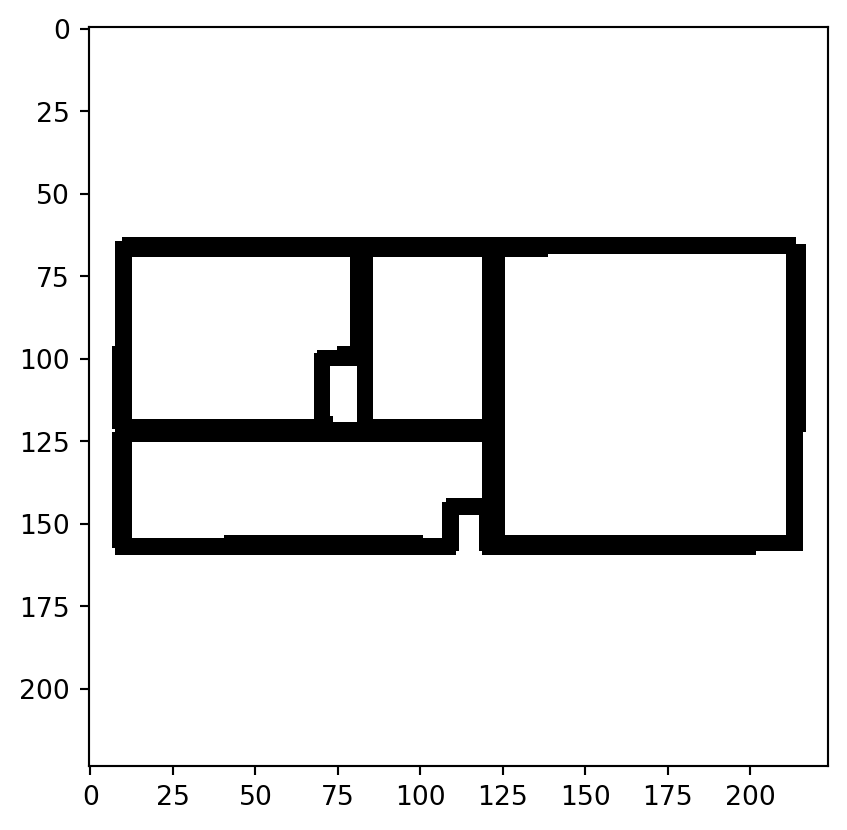

import pandas as pd
import numpy as np
import sklearn
import cv2
import random
import matplotlib.pyplot as plt
import timeShallow neural network exercise
Neufert 4.0
machine learning
Let’s see if I can write a single hidden layer NN that would be able to say if an image of a floor plan shows a one-room apartment or not.
First, load libraries.
Read in the data:
df = pd.read_csv("../../static/data/all_flats_clustered.csv")Data processing
To make things simple, I’m going to only work with one apartment per shape cluster.
df.drop_duplicates("cluster", keep = "first", inplace = True)I also only want to keep 2,000 one- and four-room apartments.
df = df[(df.room_number == 1) | (df.room_number == 4)]
df = df.head(2000)Let’s read in the floor plan images. These are saved locally on my computer, soz… ¯\_(ツ)_/¯
I’ll create an empty array and then append each image in a loop. cv2.imread(x, 0) reads the files in greyscale. I want to normalise the values so that they don’t range between 0 and 255 but 0-1. I also want to get rid of the greyscale by forcing non-white pixels to be black. That is what ... == 1 does and astype(int) casts the resulting boolean as integer.
all_data = []
for i in range(0, df.shape[0]):
img = cv2.imread("../../../similarity/0" + str(df.room_number.iloc[i]) + "_room/" + str(df.room_number.iloc[i]) + "room_" + df.bfa.iloc[i] + ".png", 0)
all_data.append(((img / 255) == 1).astype(int))
# convert to NumPy array so that it has .shape
all_data = np.array(all_data)Let’s see if that worked:
plt.imshow(all_data[0], cmap = "gray")<matplotlib.image.AxesImage at 0x17e9086c0a0>
Now, let’s flatten the images, reshaping each to a 1D array.
all_data = all_data.reshape(all_data.shape[0], -1)
df = df["room_number"].values.reshape(df.shape[0], 1) # only keep relevant columns
df = (df == 1).astype(int)As a final step in data wrangling, I’m creating a 30-70 split of the data into train and test sets.
train_ind = np.random.choice(range(0, df.shape[0]), 600, replace=False)
mask = np.zeros(df.shape[0], dtype=bool)
mask[train_ind] = True
X_train = all_data[mask]
Y_train = df[mask]
X_test = all_data[~mask]
Y_test = df[~mask]Model design

Forward propagation
Note
I’m following a linear regression convention below as that’s the one I’m most familiar with. In ML literature, you may find the same equation expressed as \(\mathbf{Z}^{[1]} = \mathbf{W}^{[1]\textsf{T}}\mathbf{X} + b\). This is really the same thing and the difference is only due to the fact that the \(\mathbf{Z}^{[1]}\) and \(\mathbf{W}^{[1]}\) matrices here are transposed with respect to those in ML literature.
\[\mathbf{Z}^{[1]} = \mathbf{X}\mathbf{W}^{[1]} + B^{[1]},\]
where
\[ \mathbf{X} = \begin{bmatrix} x_{11} & \dotsb & x_{1n}\\ x_{21} & \dotsb & x_{2n}\\ \vdots & \ddots & \vdots\\ x_{m1} & \dotsb & x_{mn} \end{bmatrix}, \]
is the \(m\times n\) matrix of \(n\) features for \(m\) training examples (observations).
\[ \mathbf{W}^{[1]} = \begin{bmatrix} w_{11} & w_{12} & w_{13} & w_{14}\\ w_{21} & w_{22} & w_{23} & w_{24}\\ \vdots & \vdots & \vdots & \vdots\\ w_{n1} & w_{n2} & w_{n3} & w_{n4} \end{bmatrix}, \]
is a \(n\times 4\) matrix of weights, with each column representing the weights for one of the four nodes of the hidden layer. Rows contain the regression weights for all of the \(n\) features.
\[ B^{[1]} = \begin{bmatrix} b_1 \\ b_2 \\ b_3 \\ b_4 \end{bmatrix} \]
is a column vector of biases/intercepts.
The resulting matrix \(\mathbf{Z}^{[1]}\) is a \(m\times 4\) matrix of outcomes of this linear regression with one column per node of the hidden layer.
\[ \begin{aligned} \mathbf{A}^{[1]} &= \tanh(\mathbf{Z}^{[1]}) \\ Z^{[2]} &= \mathbf{A}^{[1]}W^{[2]} + b^{[2]} \\ \hat{Y} &= Z^{[2]} = \sigma(Z^{[2]}) \\ y^{(i)}_{pred} &= \begin{cases} 1 & \text{if }\hat{y}^{(i)} > 0.5 \\ 0 & \text{otherwise} \end{cases} \end{aligned} \]
In the above, \(\hat{Y}\) is a column vector of \(m\) predicted probabilities, one for each training example. \(\hat{y}^{(i)}\) and \(y^{(i)}_{pred}\) are the predicted probability and the categorical prediction for the \(i\)th example, respectively.
Note
Since this network has only 2 layers, \(W^{[2]}\), \(Z^{[2]}\) and \(A^{[2]}\) are column vectors, hence the italics.
FP implementation
def sigmoid(x):
return 1 / (1 + np.exp(-x))
def tanh(x):
return (np.exp(2 * x) - 1) / (np.exp(2 * x) + 1)
def model_dimensions(data, outcome, n_nodes = 4):
# n = number of predictor features
# m = n of observations
# y_size = n of outcome features
n = data.shape[1]
m = data.shape[0]
y_size = outcome.shape[1]
return n, m, y_size, n_nodes
def params_init(n_x_features, n_y_features, n_nodes):
W1 = np.random.randn(n_x_features, n_nodes) * .001
b1 = np.zeros(n_nodes).reshape(n_nodes, 1)
W2 = np.random.randn(n_nodes, 1) * .001
b2 = 0
return {"W1": W1, "b1": b1, "W2": W2, "b2": b2}
def forward(x, params):
W1 = params["W1"]
b1 = params["b1"]
W2 = params["W2"]
b2 = params["b2"]
Z1 = np.dot(x, params["W1"]) + params["b1"].T
A1 = tanh(Z1)
Z2 = np.dot(A1, W2) + b2
A2 = sigmoid(Z2)
steps = {
"Z1": Z1,
"A1": A1,
"Z2": Z2,
"A2": A2
}
return A2, stepsCost function
The loss function of this model for a single example is:
\[ \mathcal{L}(\mathbf{W}^{[1]}, B^{[1]}, W^{[2]}, b^{[2]}) = y^{(i)}\log(\hat{y}^{(i)}) + (1-y^{(i)})\log(1-\hat{y}^{(i)}), \]
with the model cost function being the average of all \(\mathcal{L}\), one for each example:
\[ \mathcal{J} = -\frac{1}{2}\sum_{i=0}^{m}\mathcal{L}_i \]
Cost implementation
def cost(predicted, observed):
yhat = predicted
m = yhat.shape[0]
y = observed
cost = -np.mean(y * np.log(yhat) + (1 - y) * np.log(1 - yhat))
return float(np.squeeze(cost))Back propagation
Given \(\mathcal{J}\) defined above, we need the following derivatives1 to implement the back propagation:
Note
\(\circ\) denotes element-wise product.
\[ \begin{aligned} \mathcal{J}^\prime_{Z^{[2]}} &= A^{[2]} - Y \\ &= dZ^{[2]}\\ \mathcal{J}^\prime_{W^{[2]}} &= \frac{1}{m}\mathbf{A}^{[1]\textsf{T}}dZ^{[2]} \\ \mathcal{J}^\prime_{b^{[2]}} &= \frac{1}{m}\sum_{i=1}^{m}dZ_i^{[2]} \\ \mathcal{J}^\prime_{\mathbf{Z}^{[1]}} &= dZ^{[2]}\mathbf{W}^{[2]\textsf{T}} \circ g^\prime(\mathbf{Z}^{[1]}) \\ &= dZ^{[2]}\mathbf{W}^{[2]\textsf{T}} \circ (1 - \mathbf{A}^{[1]}\circ\mathbf{A}^{[1]}) \\ &= dZ^{[1]} \\ \mathcal{J}^\prime_{\mathbf{W}^{[1]}} &= \frac{1}{m}\mathbf{X}^\textsf{T}dZ^{[1]} \\ \mathcal{J}^\prime_{B^{[1]}} &= \frac{1}{m}\sum_{i=1}^{m}dZ_{ij}^{[1]} \\ \end{aligned} \]
\(g^\prime(\mathbf{Z}^{[1]})\) is the derivative of the activation (link) function in the hidden layer, in this case the \(\tanh\) function. \(g(\mathbf{Z}^{[1]}) = \tanh(\mathbf{Z}^{[1]}) = \mathbf{A}^{[1]}\) and its derivative is \(1 - \mathbf{A}^{[1]}\circ\mathbf{A}^{[1]}\).
BP implementation
def backward(X, Y, params, fwd_steps):
m = X.shape[0]
A1 = fwd_steps["A1"]
A2 = fwd_steps["A2"]
W1 = params["W1"]
W2 = params["W2"]
b1 = params["b1"]
b2 = params["b2"]
dZ2 = A2 - Y
dW2 = np.dot(A1.T, dZ2)/m
db2 = np.mean(dZ2)
dZ1 = np.dot(dZ2, W2.T) * (1 - A1 ** 2)
dW1 = np.dot(X.T, dZ1)/m
db1 = np.sum(dZ1.T, axis=1, keepdims=True)/m
# print(db1.shape)
return {
"dW1": dW1,
"db1" : db1,
"dW2": dW2,
"db2" : db2,
}On top of the back propagation function, we also need a function that updates parameters. The one below modifies the object passed to params= in place and doesn’t return anything.
def update_params(params, grads, learning_rate):
params["W1"] -= learning_rate * grads["dW1"]
params["W2"] -= learning_rate * grads["dW2"]
params["b1"] -= learning_rate * grads["db1"]
params["b2"] -= learning_rate * grads["db2"]
returnFull model
OK, time to put it all together. I’m also including a tolerance parameter. If the absolute difference between the costs of two consecutive iterations, the model is deemed to have converged and the loop breaks.
def nn_model(X, Y, n_nodes, learning_rate=.2, n_iter=10000, tol=1e-5, seed = None, print_cost=True):
start = time.time() # start timer
if seed is not None:
np.random.seed(seed)
J = []
n_x, n_samp, n_y, foo = model_dimensions(X, Y, n_nodes)
gradients = {
"dW1": np.zeros(n_x * n_nodes).reshape(n_x, n_nodes),
"db1" : np.zeros(n_nodes).reshape(n_nodes, 1),
"dW2": np.zeros(n_nodes).reshape(n_nodes, 1),
"db2" : 0,
}
params = params_init(n_x, n_y, n_nodes)
for i in range(0, n_iter + 1):
if i == n_iter:
print("Model failed to converge")
break
Y_hat, steps = forward(X, params)
J.append(cost(Y_hat, Y))
if i > 0 and abs(J[i - 1] - J[i]) < tol:
end = time.time()
elapsed = end - start
print (f'Model converged in {round(elapsed, 1)} seconds after {i + 1} iterations')
break
gradients = backward(X, Y, params, steps)
update_params(params, gradients, learning_rate)
if print_cost and i % 50 == 0:
print (f'Cost after iteration {i}: {J[i]}')
return {"params": params, "cost": J}Cool, all that’s left to do is run the model on the training set:
m1 = nn_model(X_train, Y_train, 4)Cost after iteration 0: 0.6931060324765631Model converged in 2.2 seconds after 18 iterationsThat was actually way faster than I would have expected…
Testing the model
First, a quick wrapper function that returns a binary array of predictions: 0 = not a one-room floor plan; 1 = one-room floor plan.
def predict(X, params):
yhat, steps = forward(X, params)
return (yhat > .5).astype(int)Next, we need to use the previously learnt parameters stored in m1 and pass the test dataset to predict().
pred = predict(X_test, m1["params"])Finally, let’s calculate the classification accuracy:
acc = float((np.dot(Y_test.T, pred) + np.dot(1 - Y_test.T, 1 - pred)) / float(Y_test.size) * 100)Our simple model correctly classified 64.1% of the floor plans in the test set
Not amazing but given that the model only uses raw pixel values of the images, it’s not that bad either.
Footnotes
I am really not sure if the terminology and notation are technically correct. The equations below represent the individual steps for the back propagation simultaneously over all examples. The outputs of the individual steps range from scalar to matrix. Whether or not “derivative” is the appropriate term, I don’t know. I’m just a dumdum ¯\_(ツ)_/¯↩︎